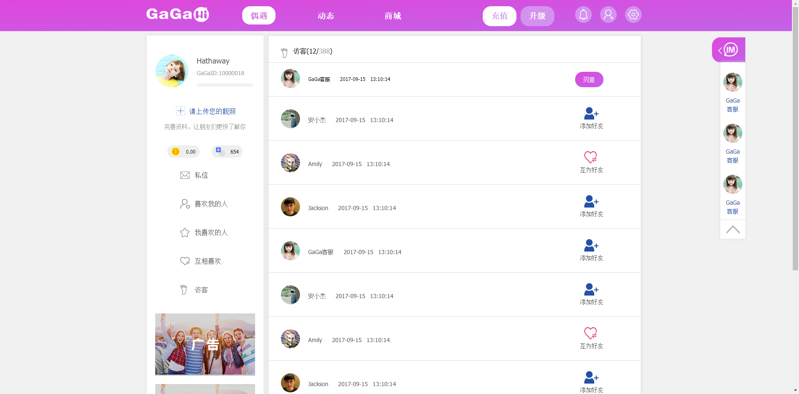
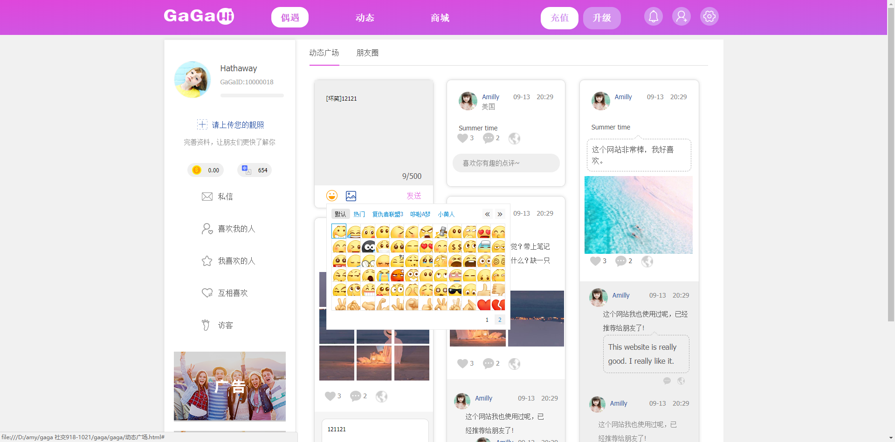
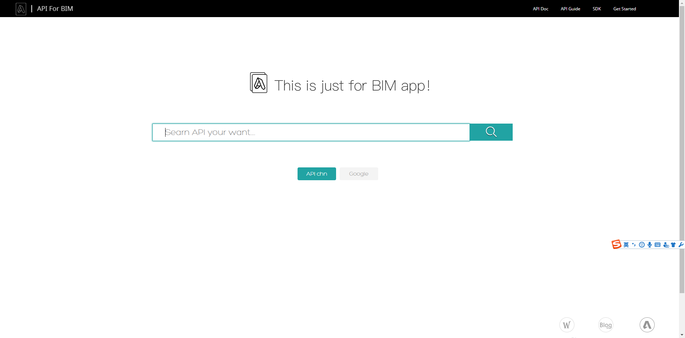
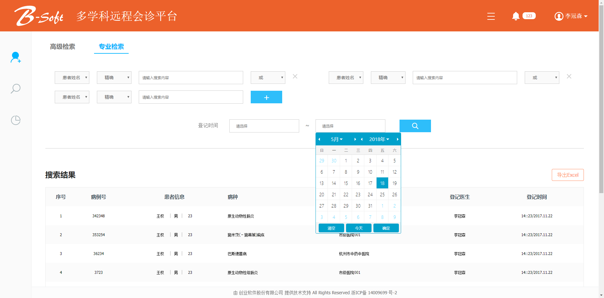
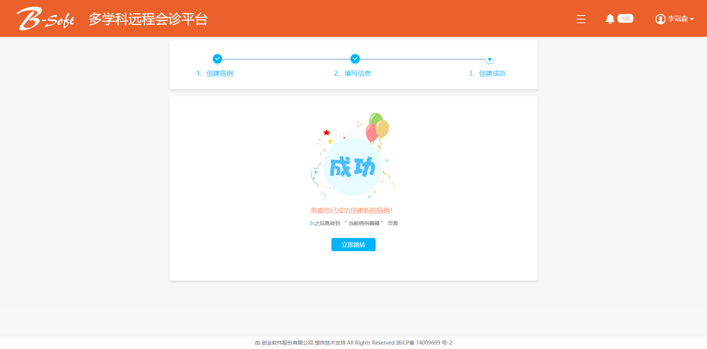

-
- Basic info. 基本信息
- 姓名: Ada Wu
- 工作年限: 2017.9~至今
-
- Experience. 工作与项目经验
杭州思发路科技有限公司（2019.9 - 至今）
-
安服宝后台管理（2019.9~2019.11）
项目介绍：安服宝APP的使用者是安装工，主要功能有注册安装工信息、接单，安服宝后台管理主要功能是管理安装工、派单信息、安装工工具商城、安服宝APP端推送文章的编写和管理。
负责部分： 主要 的前端页面开发工作，项目使用了Vue.js/ES6/Axios、富文本编辑。
-
靓惠诚仓储系统后台管理（2019.11~2019.12）
项目介绍：靓惠诚仓储APP的使用者是仓库管理人员，主要功能有货品的入库、出库、打印货架编码、货品编码，靓惠诚仓储系统后台管理主要功能是仓库货品记录、出入库流水记录、货品种类管理、记录打印。
负责部分： 主要 的前端页面开发工作，项目使用了Vue.js/ES6/Axios、LODOP打印。
杭州鲜入为主网络科技有限公司（2018.5 - 2019.7）
-
Freshin鲜入为主官方旗舰店小程序(2018.5 - 2019.7)
项目介绍：这是一个鲜入为主的自营平台，让用户方便地购买到澳大利亚的商品。
负责部分： 主要 的前端页面开发工作，项目使用了微信原生和WeUI框架。
-
Freshin鲜入为主联盟小程序(2018.9 - 2019.7)
项目介绍：鲜入为主联盟是鲜入为主品牌旗下的分销商平台，为分销商提供商品推荐、分享、数据分析等工具，目标让分销商 提升效率，方便管理。
负责部分： 主要 的前端页面开发工作，项目使用了微信原生和WeUI框架。
杭州艾米网络科技有限公司（2017.3 - 2018.5）
-
GaGaHi(2017.11-2018.1)
项目介绍：GaGaHi是一个交友网站，有商城购物、在线聊天和朋友圈动态等功能。
负责部分： 主要 的前端页面开发工作，项目使用了原生JavaScript/CSS/Ajax。
 
-
API For BIM（2017.11 - 2017.12）源代码
项目介绍：风格简洁的文档搜索类项目。
负责部分： 主要的前端页面开发工作，项目使用了原生JavaScript/CSS/HTML。

-
多学科远程会诊平台（2017.9 - 2017.11）源代码
项目介绍：该项目是一个医院登记、编辑、搜索病例的网站
负责部分： 主要的前端页面开发工作，项目使用了原生JavaScript/CSS/HTML
 
-
- Skill. 技能清单
前端
-
HTML / CSS
前端基础扎实，熟悉ES6语法，了解HTTP协议，能编写语义化的，兼容主流浏览器的代码
了解 Less Sass 等CSS预处理和模块化工具
-
JavaScript
熟悉原生 Javascript，能脱离 jQuery 等类库编码
能运用模块化、面向对象的方式编程
了解 Vue.js、jQuery等框架 的使用
-
其他
有 微信小程序/支付宝小程序 开发经验
熟练使用git版本管理工具